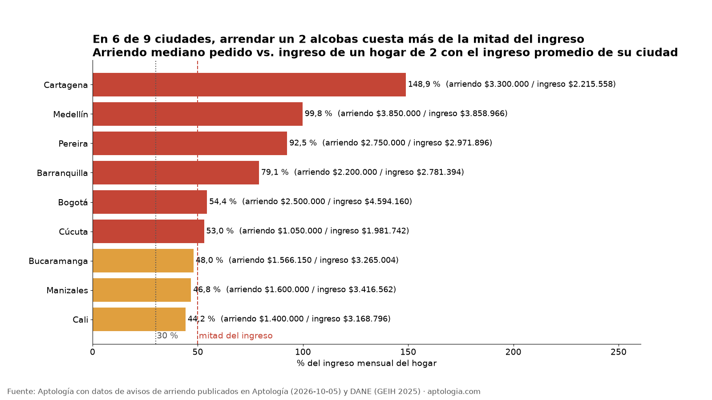
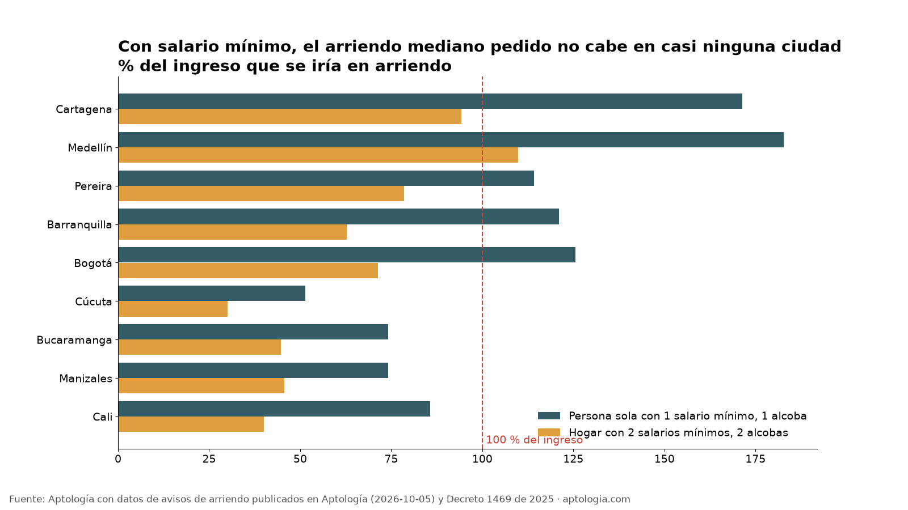
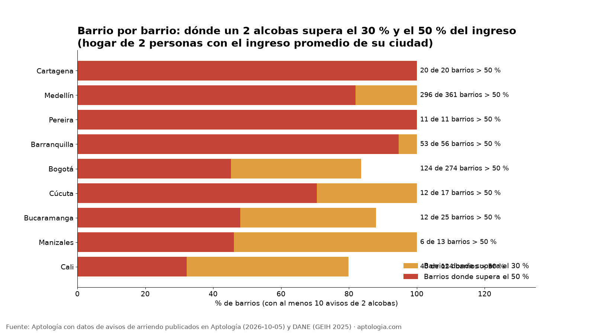

¿Qué porcentaje del sueldo se va en arriendo? Las ciudades donde se come más de la mitad
Estudio con datos abiertos (CC BY 4.0). Versión original: https://www.aptologia.com/estudios/arriendo-vs-ingreso-por-ciudad
En 6 de las 9 ciudades medidas, arrendar un apartamento de 2 alcobas cuesta más de la mitad del ingreso de un hogar de dos personas con el ingreso promedio de su ciudad. En Bogotá es el 54,4 %: arriendo mediano pedido de $2.500.000 (Aptología, 5 de octubre de 2026) frente a un ingreso de $4.594.160 al mes (2 × $2.297.080, ingreso per cápita de DANE, GEIH 2025).
Resumen: en ninguna de las 9 ciudades el arriendo típico de un 2 alcobas baja del 30 % del ingreso, el umbral que usan las aseguradoras y las inmobiliarias. El caso más extremo es Cartagena, donde equivale al 149 %.
Actualizado: 9 de octubre de 2026.
Precios pedidos, no de cierre. Las cifras de Aptología son medianas del precio que se pide en los avisos publicados el 5 de octubre de 2026, no lo que finalmente se paga ni se firma.

El ranking
| Ciudad | Arriendo mediano pedido, 2 alcobas (Aptología) | Ingreso per cápita mensual (DANE 2025) | % del ingreso de un hogar de 2 con ingreso promedio | % de un hogar con 2 salarios mínimos | Arriendo de 1 alcoba como % de 1 salario mínimo |
|---|---|---|---|---|---|
| Cartagena | $3.300.000 | $1.107.779 | 148,9 % | 94,2 % | 171,3 % |
| Medellín | $3.850.000 | $1.929.483 | 99,8 % | 109,9 % | 182,8 % |
| Pereira | $2.750.000 | $1.485.948 | 92,5 % | 78,5 % | 114,2 % |
| Barranquilla | $2.200.000 | $1.390.697 | 79,1 % | 62,8 % | 121,1 % |
| Bogotá | $2.500.000 | $2.297.080 | 54,4 % | 71,4 % | 125,6 % |
| Cúcuta | $1.050.000 | $990.871 | 53,0 % | 30,0 % | 51,4 % |
| Bucaramanga | $1.566.150 | $1.632.502 | 48,0 % | 44,7 % | 74,2 % |
| Manizales | $1.600.000 | $1.708.281 | 46,8 % | 45,7 % | 74,2 % |
| Cali | $1.400.000 | $1.584.398 | 44,2 % | 40,0 % | 85,7 % |
Datos completos en datos.csv. Las cifras por barrio están en datos_barrios.csv y datos_barrios_resumen.csv.
Lo que dicen los datos
- La hipótesis se queda corta. Esperábamos que en algunas ciudades el arriendo pasara del 30 % del ingreso. Pasa del 30 % en las 9 y de la mitad en 6.
- Bogotá no es la peor. Tiene el ingreso más alto de las ciudades medidas, y eso la deja en el 54 %. Cartagena, Medellín, Pereira y Barranquilla están peor.
- Con salario mínimo, el arriendo típico no alcanza. Para una persona sola que gana el mínimo ($1.750.905), el arriendo mediano pedido de 1 alcoba supera el 100 % del sueldo en 5 de las 9 ciudades. Solo Cúcuta queda cerca de la mitad (51,4 %).
- Barrio por barrio: en Bogotá, en 124 de 274 barrios con datos suficientes, un 2 alcobas pasa de la mitad del ingreso de referencia. En Medellín pasa en 296 de 361 barrios.


Metodología
- Datos de Aptología: mediana del arriendo pedido en avisos vivos de apartamentos por ciudad y número de alcobas (API /hoy, 5 de octubre de 2026,
costo_alcoba_ciudad.csv) y mediana de 2 alcobas por barrio (precios_arriendo_barrios_detalle_api.csv). Solo entran ciudades con al menos 300 avisos de 2 alcobas y barrios con al menos 10. - Datos públicos: ingreso per cápita de la unidad de gasto 2025 por ciudad capital (DANE, GEIH, anexo de pobreza monetaria, publicado el 12 de junio de 2026). Salario mínimo de 2026: $1.750.905 (Decreto 1469 de 2025).
- Hogares de referencia, elegidos por nosotros y no medidos por el DANE:
- (A) dos personas, cada una con el ingreso promedio de su ciudad: arriendo de 2 alcobas ÷ (2 × ingreso per cápita);
- (B) hogar con dos salarios mínimos;
- (C) persona sola con un salario mínimo frente a 1 alcoba.
- Actualización:
actualizar.pyrelee el dataset de Aptología y el anexo del DANE y regenera los CSV y las gráficas.
Limitaciones
- Son precios pedidos en avisos vivos, no lo que pagan los hogares que ya arriendan. Los contratos vigentes suelen ser más baratos porque solo suben con el IPC.
- La oferta en portales sobrerrepresenta los segmentos medio y alto. En Cartagena y Medellín pesan los apartamentos amoblados y de renta turística o corta. Es probable que eso eleve las medianas de esas dos ciudades, pero no lo hemos medido.
- El ingreso del DANE es un promedio (no la mediana) de 2025, mientras que los arriendos son de 2026. Además, el DANE mide la ciudad capital sin su área metropolitana.
- El hogar de dos personas es un supuesto ilustrativo, no el tamaño real del hogar en cada ciudad.
Preguntas frecuentes
¿Qué porcentaje del sueldo debería ir al arriendo? La regla práctica del mercado es que el arriendo más la administración no pasen del 30 % del ingreso demostrado (ejemplo de requisitos de una inmobiliaria). En las 9 ciudades medidas, el arriendo típico de un 2 alcobas supera ese 30 % para un hogar de ingreso promedio.
¿Cuánto cuesta el arriendo en Bogotá? La mediana pedida es de $2.200.000 para 1 alcoba y $2.500.000 para 2 alcobas (Aptología, octubre de 2026).
¿Cuánto cuesta vivir en Medellín en arriendo? La mediana pedida para un 2 alcobas es de $3.850.000, cerca del 100 % del ingreso de un hogar de dos personas con el ingreso promedio de la ciudad.
¿En qué ciudad es más barato arrendar en proporción al sueldo? De las 9 medidas, en Cali (44,2 %) y Manizales (46,8 %).
¿Me alcanza el salario mínimo para arrendar solo? En 5 de las 9 ciudades, el arriendo mediano pedido de 1 alcoba es más alto que el salario mínimo completo. En las otras 4 se lleva entre el 51 % y el 86 % del sueldo; el valor más bajo es el de Cúcuta, donde equivale al 51 % del mínimo.
Demanda de búsqueda
Trends (2026-10-09): 'arriendo' (45 de promedio en 5 años) domina; 'arriendo bogota' (6) y 'arriendo medellin' (3) están lejos y 'precio arriendo' da 0. Hay más búsquedas de 'barato' (arriendos medellín baratos +300 %, aparta estudio en bogota +150 %), coherentes con el hallazgo de que el arriendo no cabe en el ingreso. La query principal no cambia porque ninguna medida es claramente mejor y a la vez específica. Se agregan esas búsquedas como secundarias. Pico en enero. Comparación: Google Trends. Son valores relativos, sin volúmenes absolutos. El autocompletado de Google, consultado el mismo día, está en meta.json.
Cómo citar
Pinzón Pineda, D. M. (2026). ¿Qué porcentaje del sueldo se va en arriendo? Las ciudades donde se come más de la mitad. Aptología. Con datos de avisos de arriendo de Aptología y del DANE (GEIH 2025). https://www.aptologia.com/estudios/arriendo-vs-ingreso-por-ciudad. Datos: datos.csv, licencia CC BY 4.0.